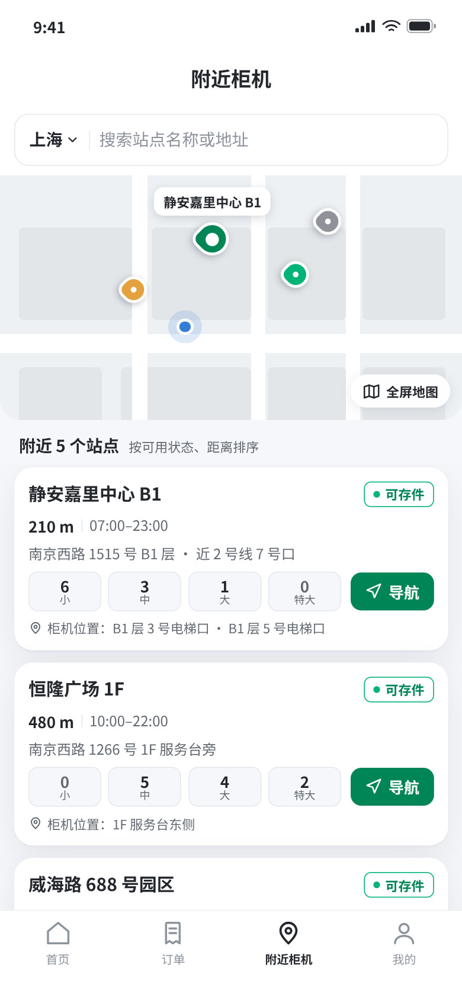
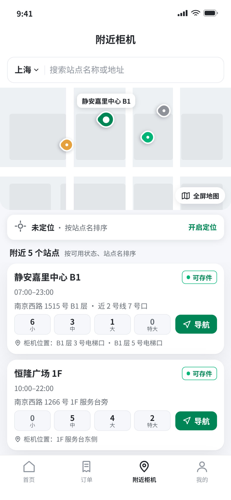
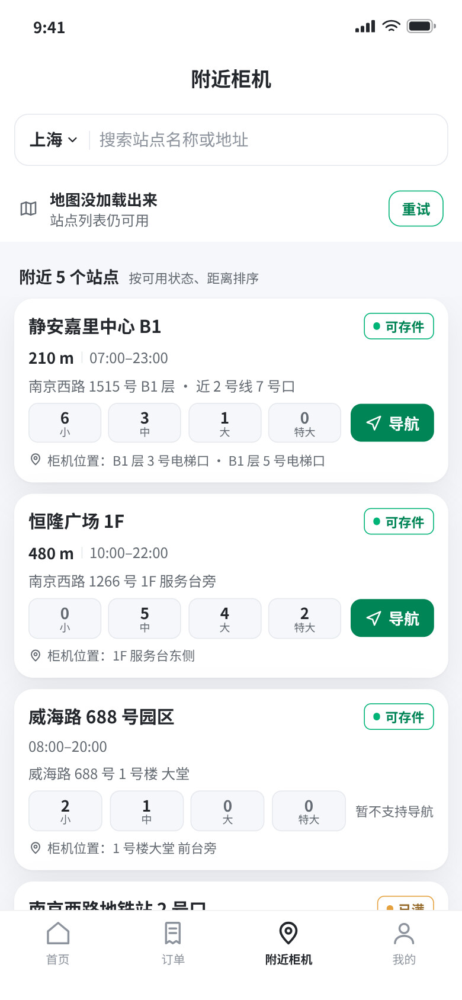
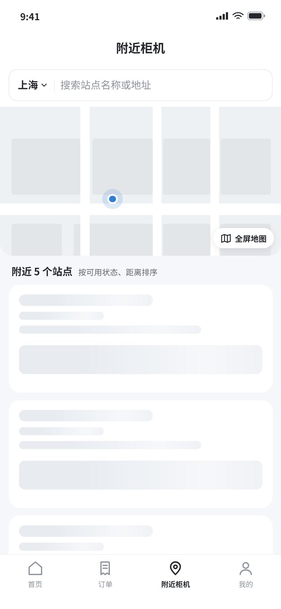
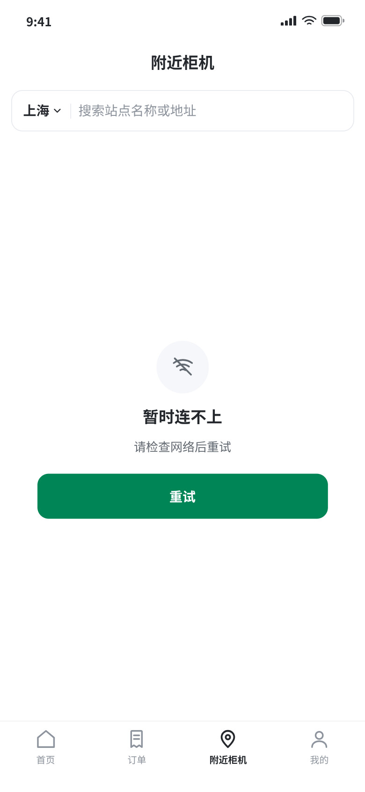
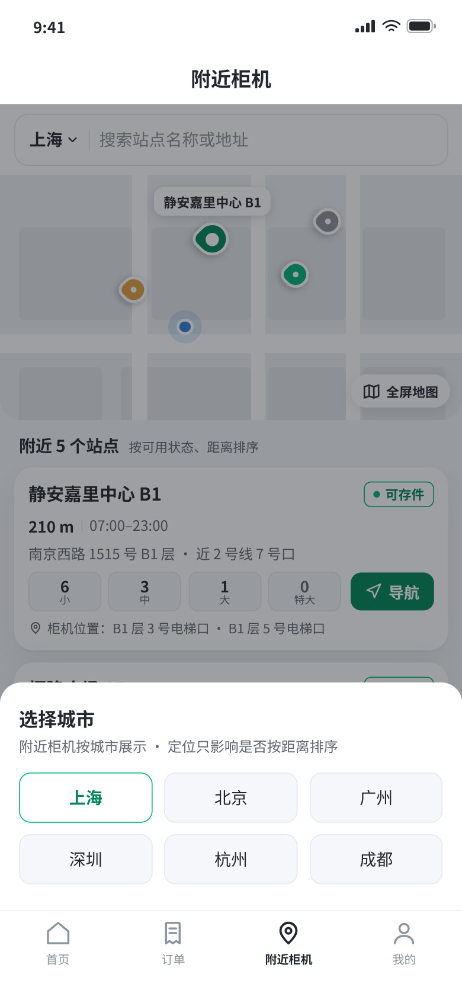
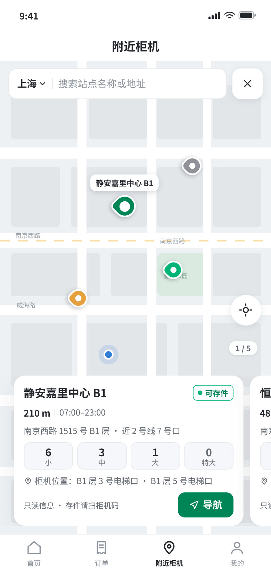

已选：B · 上下分屏（2026-10-22）
地图带 + 常驻列表：点列表定位 marker，地图失败塌成一行，定位被拒只隐藏距离。
A / C 保留为比较记录。真实入口：
phone.html?view=B&state=ready|denied|maperr|empty|loading|neterr|search|noresult|citypick|map。
不是配色差异：地图占多少、列表在哪、主操作是什么，三者互相不同意。
| 维度 | A · 地图优先 | B · 上下分屏 | C · 目录优先 |
|---|---|---|---|
| 首屏主角 | 地图（几乎满屏） | 地图带 + 列表各占一半 | 列表（地图收在页头按钮后） |
| 一屏能比较几个站点 | 1（轮播） | 约 2.5 | 约 3.5，按可用状态分组 |
| 地图的价值 | 找方向、看密度 | 空间索引：点列表 → 地图定位 | 一次性查看，非主路径 |
| iOS 同层渲染失败时 | 地图不可用 → 自动切列表抽屉，首屏是空的 | 地图带塌成一行提示，列表原地不变 | 主路径本来就不依赖地图 |
| 定位被拒时 | 地图退成城市视图，卡片隐藏距离 | 地图带保留，列表隐藏距离 | 列表直接按站点名排序 |
| 主要风险 | 卡片压在地图原生组件上；一次只看一个 | 地图只有 206px，密度信息有限 | 「附近」看起来像普通列表 |
状态由 ?state= 切换；截图均为 390×844 @2x。






